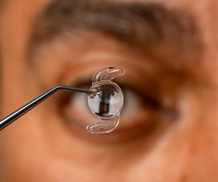
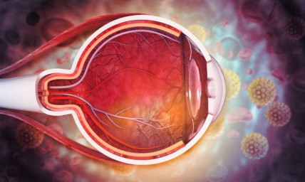

Khanna Eye Centre traces its roots back to 1951, when Dr. B.N. Khanna began his mission to make quality eye care accessible to people across India.
A victim of Partition and a refugee himself, Dr. Khanna started with limited resources but a strong commitment to helping people affected by avoidable blindness. His vision was to work towards a cataract-free India and make eye care available to those who needed it most.
What began as a small practice gradually grew into a wider network of charitable eye care facilities across India and, eventually, two high-tech eye centres in Delhi.
Today, Khanna Eye Centre continues to follow the principles on which it was founded: quality eye care, modern technology, affordability and compassionate treatment.
Dr. B.N. Khanna dedicated much of his life to providing eye care to people from underserved communities. Over the course of his work, he conducted approximately 6.25 lakh free eye surgeries for underprivileged patients.
His contribution to eye care continued alongside the growth of his private practice and the development of modern ophthalmic facilities.

LASIK Eye Surgery
We offer advanced LASIK procedures, including Blade-Free LASIK, Femto Second Intralase, Thin-Flap LASIK, High Definition LASIK and customized LASIK options for suitable patients.

ICL Surgery
Implantable Collamer Lens (ICL) surgery is available for patients with high myopia or those who may not be suitable candidates for LASIK due to factors such as a thin cornea.

Cataract Surgery
We provide cataract evaluation and surgical care using modern diagnostic and surgical technologies to help restore clear vision.

IOL
Our lens care includes multifocal and toric intraocular lenses (IOLs). Optical Biometry is used for accurate IOL power calculation as part of cataract treatment planning.

Cornea Treatment
Our cornea services include assessment and treatment for conditions such as Keratoconus, with technologies and procedures including Pentacam HR-3, C3R and Intacs.

Retina Treatment
Our retinal care includes advanced Vitreo-Retinal Surgery, Fluorescein Angiography, Green Laser photocoagulation, TTT Diode, and Anti-VEGF treatment for conditions such as ARMD.
Khanna Eye Centre offers a range of specialised eye care procedures, diagnostic technologies and treatment facilities across different areas of ophthalmology.
At Khanna Eye Centre, our mission and vision are rooted in providing quality eye care with compassion, accessibility, and the appropriate use of modern technology.
Whether you need a routine eye examination, vision correction consultation or treatment for an existing eye condition, our team is here to help you understand your eye care options.
Contact Us